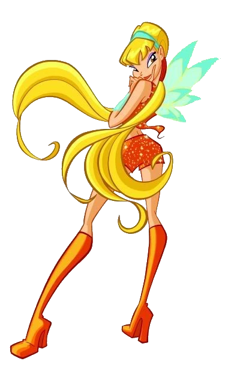

Stella, a Fada do Sol reluzente
Princesa e fada guardiã de Solaria,
guardiã do Anel de Solaria e
fada do Sol e da Lua.
Idade: 17 anos
Aniversário: 18 de Agosto
Biografia:
Stella nasceu no dia 18 de agosto, o seu signo astrológico é Sereia. Stella é a princesa de Solária. O seu pai, o rei Radius, e a sua mãe, a rainha Luna, são reis de Solária. Ela é filha única, e os seus pais estão separados, até a temporada 5.
Poderes:
Poderes solares e lunares
Fotocinese
Anel de Solária
Magia relacionada ao sol, luz e a lua
Manipulação de energia cósmica
Parte da Chama do Dragão (dada por bloom )
Curiosidades:
1. O nome “Stella” significa “estrela” em italiano, e pode querer dizer a sua magia.
2. A magia de Stella é a oposta da magia de Darcy (luz-escuridão).
3. De acordo com Iginio Strafii, é a terceira fada mais poderosa, sendo Bloom a primeira e Flora a segunda.
4. Ela foi inspirada na atriz Cameron Diaz, segundo Iginio Strafii.
5. Ela, em Sirenix 3D, as madeixas são cor-de-rosa; mas em 2D são roxas.
6. Geralmente é mais vista com Bloom e Flora.
7. Ela é a única fada que com o Mythix tem botas.
8. Stella já usou 2 varinhas (com o Mythix e como Fada Moderna).
9. Ela é uma fada do sol, e essa estrela tem muita luz e calor (a temperatura é de 150000 milhões de graus), mas ela apenas usa a luz do sol, tendo uma magia muito quente, sendo a sua magia muito mais quente que a de Bloom.
10. A magia da Stella é também baseada na luz da lua, mas a lua não tem luz própria.